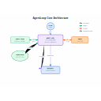
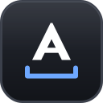

Open-source AI image and design agents (2026)
AI image and design agents with public source code you can read, self-host and extend. Here are the top 25 of 58 from the AgentScout directory.
Quick answer: the top picks on this list, ranked by GitHub stars and listing maturity, are ComfyUI, Taste Skill and Archify, out of 25 tools listed below. At a glance: 25 open-source, 25 free or freemium and 19 local or self-hosted across 25 link-checked tools (last verified ).
Verified on : every tool link on this page was checked by our daily link check. No paid placements.
Ranked comparison (top 10)
| # | Tool | Pricing | Best for | Open source | Runs locally | GitHub stars |
|---|---|---|---|---|---|---|
| 1 | ComfyUI | Open source + cloud | generate video, generate images | Yes | 144,113 | |
| 2 | Taste Skill | Open source | write code, automate the browser | Yes | Self-hosted | 112,355 |
| 3 | Open source | write code, make diagrams | Yes | Self-hosted | 94,965 | |
| 4 | OpenHands | Open source + cloud | write code, automate workflows | Yes | Self-hosted | 92,255 |
| 5 | Open source | edit video, generate video | Yes | Self-hosted | 73,179 | |
| 6 | Diagram Design | Open source + cloud | build an agent, make diagrams | Yes | Self-hosted | 63,162 |
| 7 | Open source | UI design | Yes | 61,870 | ||
| 8 | Open source | control a computer, connect tools via MCP | Yes | 36,504 | ||
| 9 | Onlook | Open source | build apps without code, write code | Yes | 27,046 | |
| 10 | Open source + cloud | build an agent, connect tools via MCP | Yes | Self-hosted | 19,961 |
Updated
How we picked and ranked: tools are matched by category, the pricing each maker states and what each tool says it does. They are ranked by GitHub stars as recorded on each listing (link checks 2026-11-11); tools without a tracked repo follow, by listing maturity. No paid placements.
1. ComfyUI
Node-based open-source engine for image and video generation workflows. Run models like Wan, LTX and Hunyuan locally or in Comfy Cloud, with an agent that builds workflows.
Pricing (as stated): Desktop app free and open source (GPL-3.0); Comfy Cloud Standard $20/mo ($16 yearly), Creator $35/mo, Pro $100/mo, Team $700/mo · Active
2. Taste Skill
Taste Skill is an MIT Agent Skill that pushes coding agents to build polished company websites instead of generic landing pages, enforcing one design system, plain copy, real photos and brand icons, restrained motion, and a browser-based checker and finish gate that verify the rules before a page is done.
Pricing (as stated): Open source · Mature

3. Archify
Archify is an Apache-2.0 agent skill for Cursor, Claude Code, Codex CLI and OpenCode that turns an idea, plan or whole codebase into an interactive HTML diagram you can explore, follow source links through and share, from repository maps to learning paths and travel plans.
Pricing (as stated): Open source · Mature
4. OpenHands
OpenHands is an MIT-licensed platform for autonomous coding agents whose Agent Canvas acts as a self-hosted control center: start conversations and automations such as Slack reports or splitting GitHub issues into tasks, and run the OpenHands agent or ACP-compatible agents like Claude Code, Codex, Gemini CLI and OpenCode on local, Docker, VM or company backends, with optional OpenHands Cloud and Enterprise.
Pricing (as stated): Free and open source to self-host; OpenHands Cloud and Enterprise are paid. · Mature

5. OpenMontage
OpenMontage is an AGPL-3.0 agentic video production system that turns an AI coding assistant such as Claude Code, Cursor or Codex into a video studio: you describe the video in plain language and the agent runs research, scripting, asset generation, editing and final composition through ready-made pipelines. Besides image-based videos it can cut real motion edits from free stock footage and open archives, and the repo ships a review guide and an agent guide. Paid image and video generation providers are optional.
Pricing (as stated): Free and open source (AGPL-3.0); optional paid generation providers if you choose to use them. · Mature
6. Diagram Design
Editorial diagram design for Claude Code, Codex, GitHub Copilot, Cursor, Factory Droid, and Pi. 44 diagram types.
Pricing (as stated): Open source + cloud · Mature

7. Penpot
Open-source design and prototyping tool with an official MCP server so AI agents can read and edit design files.
Pricing (as stated): Free and open source (MPL-2.0); cloud Unlimited $7/editor/mo (capped at $175), Enterprise $25/member/mo · Active

8. Next AI Draw.io
Create and edit draw.io diagrams by chatting with AI, as a web app, desktop app or MCP server.
Pricing (as stated): Open source · Mature
9. Onlook
An open-source visual editor for React and Tailwind apps where you design on a canvas and an AI agent writes the code. Edit layouts like in Figma, then export clean code to your own repo.
Pricing (as stated): Free and open source (Apache-2.0); hosted cloud version in early access. · Mature

10. Toonflow App
、 Toonflow： AI ， 、 、 、 。 、AI Agent ， 、 、 、MCP 。Open-source AI short drama and motion comic creation tool with an infinite canvas, AI agents, storyboarding, image and video generation. Self-hosted and.
Pricing (as stated): Open source + cloud · Mature

11. Framelink Figma MCP
MCP server that gives Cursor and other coding agents Figma layout data so they can implement designs accurately in one shot.
Pricing (as stated): Open source · Mature

12. Fireworks Tech Graph
Generate production-quality SVG+PNG technical diagrams from natural language. 7 styles, UML support, and AI/Agent workflow patterns
Pricing (as stated): Open source · Mature

13. Loop Engineering
Practical patterns, starters & CLI tools for loop engineering with AI coding agents. Design systems that prompt and orchestrate agents (inspired by Addy Osmani and Boris Cherny).
Pricing (as stated): Open source · Mature

14. Dashboard Icons
3,400+ curated icons and logos for dashboards and AI agents. SVG, PNG and WEBP on a free CDN, plus an MCP server for Claude Code, Codex, ChatGPT, Cursor, Hermes and OpenClaw
Pricing (as stated): Open source + cloud · Mature
15. Anti Slop
Rules for an AI coding agent to filter out generic AI-generated UI designs, text, and code
Pricing (as stated): Open source · Mature

16. Talk to Figma MCP
MCP integration that lets coding agents read and edit Figma designs.
Pricing (as stated): Open source · Mature

17. draw.io MCP
The official draw.io MCP server, so Claude, ChatGPT, Cursor and other assistants can create and edit flowcharts, architecture diagrams and other draw.io diagrams right in the chat. Free and needs no sign-in.
Pricing (as stated): Free; hosted MCP App server needs no sign-in. · Mature

18. Answer Me with HTML
Agent skill that makes Claude Code, Codex and other coding agents answer hard questions as a readable one-page HTML document with diagrams instead of a wall of text. The model writes only a short Markdown draft and a bundled Node CLI renders the SVG, CSS and layout in about 50 ms, which the project's benchmark shows cuts output tokens about 8x and response time about 2.6x versus asking for HTML directly. MIT.
Pricing (as stated): Open source · Active

19. OpenKnowledge
OpenKnowledge is a free, local-first markdown editor and knowledge base built for working alongside AI agents. It looks and feels like a Notion-style WYSIWYG editor, with callouts, tabs, Mermaid diagrams and media blocks, but every page stays a plain markdown file on your disk. Coding agents such as Claude Code, Codex, Cursor, Gemini CLI and dozens of others can read and write the same files through its integrations, so specs, team wikis and LLM wikis stay in one place that both people and agents keep up to date. It ships as a desktop app plus a web UI and CLI.
Pricing (as stated): Free and open source (GPL-3.0): desktop app, web UI and CLI · Active

20. Design Extract
Extract any website's complete design system with one command. DTCG tokens, semantic+primitive+composite, MCP server for Claude Code/Cursor/Windsurf, multi-platform emitters (iOS SwiftUI, Android.
Pricing (as stated): Open source + cloud · Active
21. shadcn/lint
Linter for Tailwind design systems from shadcn that turns your design rules into checks coding agents can run and fix against.
Pricing (as stated): Open source · Active

22. Thesvg
Thesvg is an MCP server agents call to open SVG brand library: 7,600+ brand logos and cloud icons (AWS, Azure.
Pricing (as stated): Open source · Active
23. CodeBoarding
Generates interactive architecture diagrams of codebases.
Pricing (as stated): Open source · Active

24. Figma Console MCP
Design-system-focused MCP server that reads and writes Figma and checks design-code parity and accessibility.
Pricing (as stated): Open source · Active
25. Oil UI
UI design skill for Claude Code, Codex and other coding agents that explores several distinct visual directions, compares them side by side and refines the chosen one against real screenshots. Free open-source skill.
Pricing (as stated): Open source · Active
FAQ
What are the best open-source AI image and design agents?
Ranked by tracked GitHub stars, the top open-source AI image and design agents in our directory are ComfyUI, Taste Skill, Archify, OpenHands, OpenMontage. Stars measure popularity, not fit, so compare a few against your own task.
How many open-source AI image and design agents does AgentScout list?
58 tools match. This page shows the top 25. Pricing mix on this page: Open source (19), Open source + cloud (6).
How much do these tools cost?
Pricing is what each maker states on their site. Open-source tools are free to self-host but may need a paid model API key or offer paid cloud plans; freemium tools have a free plan with limits. Check each official site.
Where can I see every tool for images and design?
Our task page lists all 148 tools we match to images and design.
Related
By role: For marketers · For designers
Best-of lists
Related categories
Facts come from our directory listings; pricing is as each maker states it and can change. Check official sites before you choose.